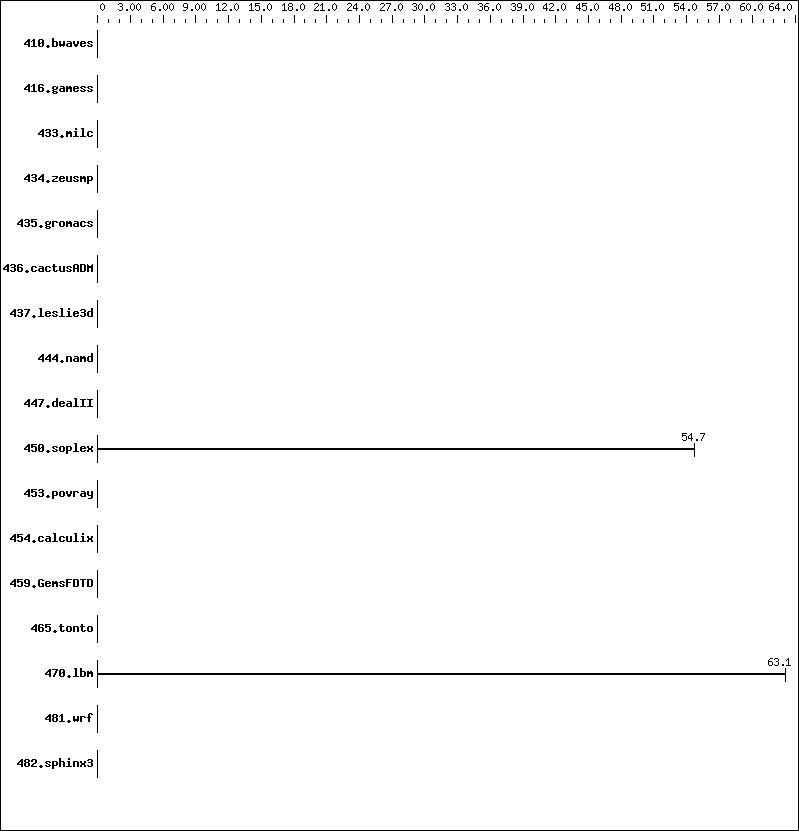

Invalid SPEC® CFP2006 Result
Copyright 2006-2008 Standard Performance Evaluation Corporation
Tyan
Tyan Thunder KKQS Pro (S4882)

'reportable' flag not set during run
465.tonto (base) did not have enough runs!
453.povray (base) did not have enough runs!
444.namd (base) did not have enough runs!
416.gamess (base) did not have enough runs!
436.cactusADM (base) did not have enough runs!
459.GemsFDTD (base) did not have enough runs!
450.soplex (base) did not have enough runs!
437.leslie3d (base) did not have enough runs!
447.dealII (base) did not have enough runs!
481.wrf (base) did not have enough runs!
433.milc (base) did not have enough runs!
410.bwaves (base) did not have enough runs!
435.gromacs (base) did not have enough runs!
482.sphinx3 (base) did not have enough runs!
434.zeusmp (base) did not have enough runs!
470.lbm (base) did not have enough runs!
454.calculix (base) did not have enough runs!
Unknown flags were used! See
http://www.spec.org/cpu2006/Docs/runspec.html#flagsurl
for information about how to get rid of this error.
C base flags: -O2
C++ base flags: -O2
Fortran base flags: -O2
| 450.soplex: |
"/mnt/sata/ffbuilds/zerocost_llvm_install/bin/clang++ -fno-asm -fno-asm-blocks -fsanitize=safe-stack -fstack-clash-protection -flto -fuse-ld=gold -fsanitize=cfi-icall -fsanitize-cfi-canonical-jump-tables -fsanitize-cfi-cross-dso -ftrivial-auto-var-init=zero -enable-trivial-auto-var-init-zero-knowing-it-will-be-removed-from-clang -mseparate-stack-seg -m32 -Wl,--allow-multiple-definition -std=gnu++03" (in CXX)
"/mnt/sata/ffbuilds/zerocost_llvm_install/bin/clang++ -fno-asm -fno-asm-blocks -fsanitize=safe-stack -fstack-clash-protection -flto -fuse-ld=gold -fsanitize=cfi-icall -fsanitize-cfi-canonical-jump-tables -fsanitize-cfi-cross-dso -ftrivial-auto-var-init=zero -enable-trivial-auto-var-init-zero-knowing-it-will-be-removed-from-clang -mseparate-stack-seg -m32 -Wl,--allow-multiple-definition -std=gnu++03" (in LD)
"-O2" (in CXXOPTIMIZE)
|
| 470.lbm: |
"/mnt/sata/ffbuilds/zerocost_llvm_install/bin/clang -fno-asm -fno-asm-blocks -fsanitize=safe-stack -fstack-clash-protection -flto -fuse-ld=gold -fsanitize=cfi-icall -fsanitize-cfi-canonical-jump-tables -fsanitize-cfi-cross-dso -ftrivial-auto-var-init=zero -enable-trivial-auto-var-init-zero-knowing-it-will-be-removed-from-clang -mseparate-stack-seg -m32 -Wl,--allow-multiple-definition" (in CC)
"/mnt/sata/ffbuilds/zerocost_llvm_install/bin/clang -fno-asm -fno-asm-blocks -fsanitize=safe-stack -fstack-clash-protection -flto -fuse-ld=gold -fsanitize=cfi-icall -fsanitize-cfi-canonical-jump-tables -fsanitize-cfi-cross-dso -ftrivial-auto-var-init=zero -enable-trivial-auto-var-init-zero-knowing-it-will-be-removed-from-clang -mseparate-stack-seg -m32 -Wl,--allow-multiple-definition" (in LD)
"-O2" (in COPTIMIZE)
|